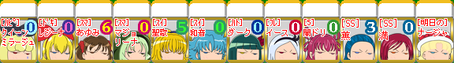
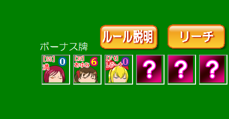
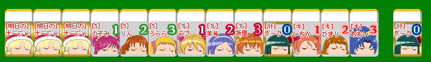

7.ボーナス牌
ボーナス牌一覧
2.牌(はい)についてのページでも説明しましたが、ボーナス牌は全部で12種類あります。

ボーナス牌は全部で12種類あるけど、一回の対局で使用されるのは、そのうちランダムで選ばれた6枚だけです。
現在の対局で使われているボーナス牌は対戦画面右側のボーナス牌表示欄で確認できます。
ボーナス牌表示欄


6枚…だけど表示されてるのは半分の3枚だけで、残りの3枚は「？」になってるよ？
「？」の3枚は隠しボーナス牌といって、対局が終了するまで公開されません。だから待ちによっては「スプラッシュスターのボーナス牌、満か薫が来たら上がれるけど……そもそも満、薫が山にあるかどうか分からない…」っていうスリリングな状況になったりするわ。
隠しボーナス牌に牌があることを期待して賭けにでるか、それとも……判断力が問われる局面ね！
ボーナス牌以外の役がないときはアガリになりません
上がった時に手牌にボーナス牌があると、ボーナス牌1枚ごとに100点の得点が加算されるんだよね！
でも、ボーナス牌以外に役が無いと上がる事はできないから、気を付けないと……。
例えば、下記の形だと、ボーナス牌以外に役が何もないので、自力で全ての牌を引いた（ロン・ポン・チーをせずにあがった）のでない限り、上がりとして認められません。もし、ロン・ポン・チーどれかをした状態で下記のアガリを宣言するとペナルティとして3000点が没収されます。ロン・ポン・チーいずれもせずに上がった場合は、ツモあがりという役がつくので下記の形でもあがることができます。間違えやすいので注意！

[7/9]